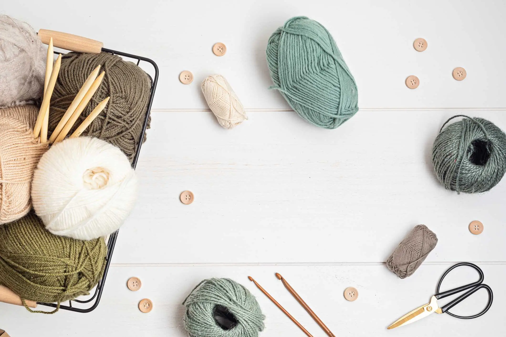
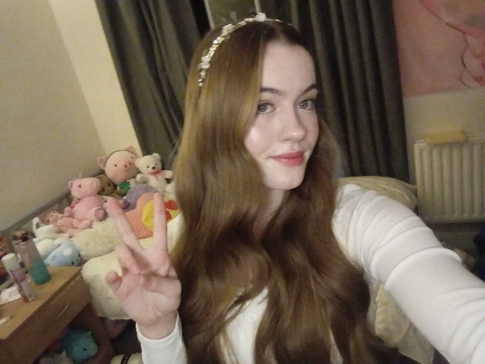
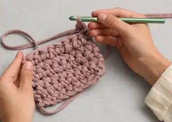
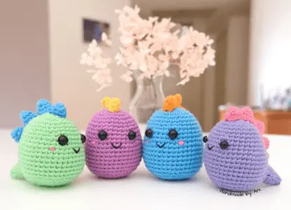
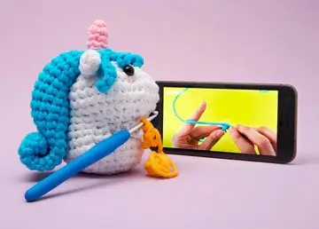
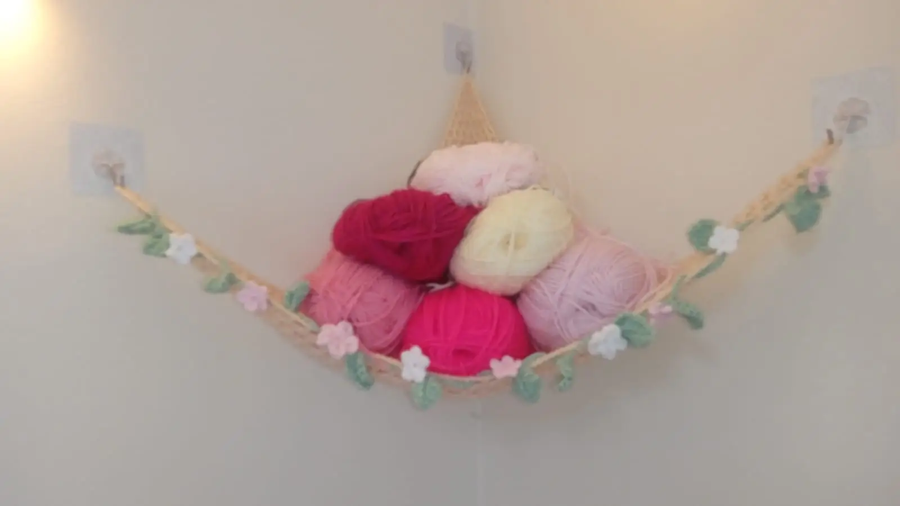
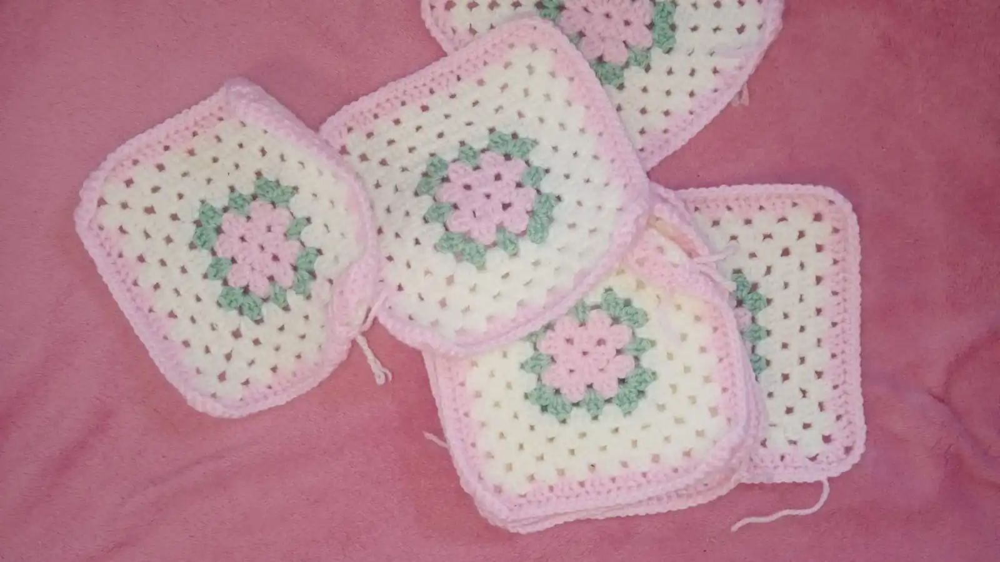
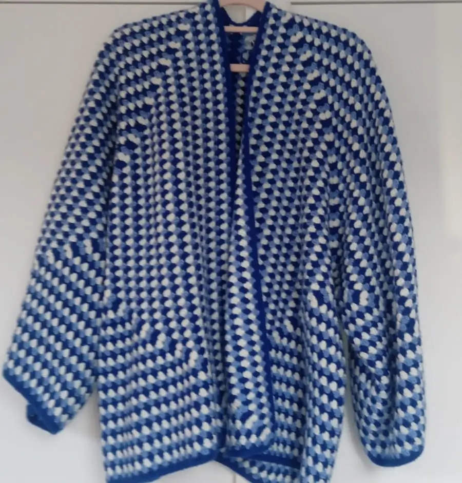

Yarn Is Life
Whether you're a beginner or an accomplished crocheter, you can find your people, your projects, and your inspiration here!
Check out our patterns, tips and tutorials for all skill levels, join our crochet club, or just browse the gallery for fresh ideas.
Happy crocheting!
About me
Hi! I'm Georgina, I live in London, and I love to crochet! I started this project because I'm a little bit obsessed with yarn, and I've found some awesome reseources and people and made some really cool things along the way. Check out the Learn to Crochet section below if you're not sure where to start, or click on the club link up top to see where we meet and stitch!

Learn to crochet
Starting from scratch? Here are a selection of resources to help you learn crochet

My Crochet Space beginners' tutorial

Colourful mini dinosaurs from Handmade By Ani

Basic stitches tutorials from The Woobles
Latest projects
Here are some of the projects I've been working on lately

I made a hammock for my yarn! I followed this toy hammock pattern

You can never have too many granny squares!

I finished my mum's cardigan